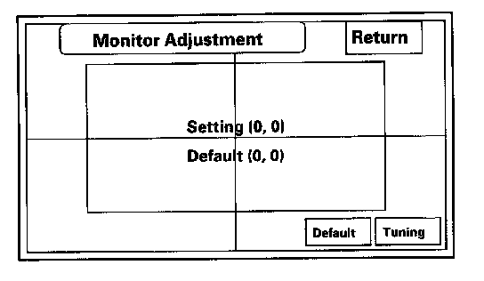

Part 1 of 2
System Diagnostic ModeSystem always comes up in in-line diagnostic mode
NOTE: If the vehicle left the factory in the factory diagnostic mode, you will see this screen every time you turn on the ignition.
When a navigation control unit is powered up for the first time at the factory or after replacement with a new or remanufactured navigation unit, the "factory diagnosis" screen (In Line Diag) shows up. Normally the factory performs the steps necessary to verify proper operation and terminate the "factory diagnostic".
Until the proper confirmation sequence is performed, the screen will show up every time the vehicle is started.
Follow the steps below to prevent the screen from showing up in the future:
- Press and hold the buttons (Menu + Map/Guide + Cancel) for about 5 seconds (the "Select Diagnosis items" screen will appear).
- Press and hold the Map/Guide button for 5 - 10 seconds (A screen with a "Complete" button, will appear).
- Select "Complete", then "Return", and then turn the key off for 5 seconds. Do not disconnect the battery during this period as the unit is saving the setting to the SRAM memory. The InLine Diag should not appear again.
- Restart the vehicle, and confirm normal operation by completing the "TQI of the Navigation System" Service Bulletin.
Start-up procedure and Diagnostic Menu
There are two ways to enter the diagnostic mode:
1. Connect the SCS connector to the navigation service connector located in the trunk. Then turn the ignition switch to the ON (II). The display will go directly to the diagnostic menu screen shown below.
NOTE: When finished troubleshooting, make sure to remove the SCS connector.
2. Turn the ignition switch ON (II). Use the navigation display hard buttons as described above below:
Make sure the battery is connected then press and hold the three buttons (Menu, Map/Guide, and Cancel), and keep them pressed for approximately 5 seconds. The display screen will go directly to the "Select Diagnosis Items" menu shown above.
3. After the display changes to the Select Diagnosis Items menu, select the item you want to check and the diagnostic will start. To return to the previous screen, select "Return".
- Navi System (Link)
- Monitor Check
- Unit Check
- Car Status
- XM (HIP)
- GPS Information
- Yaw Rate
- Tire Calibrate
- Functional Setup
- Version
Navi System Link
- This diagnostic tests the cables connecting the navigation components. Ensure that the ignition switch is in the ON (II) position. When the diagnostic begins, you hear a "bong" sound. The system is in a "Detecting" mode, and is waiting for all items in white to be tested. This includes the navigation voice control (TALK/BACK) buttons, and microphone. Press the navigation TALK button on the steering wheel, and in a normal voice, say "testing." The TALK indicator on the screen should turn green, and the voice level indicator should move to at least the 6th bar to pass. Next, press the navigation BACK button. The "Back" indicator should turn green.
- If all of the communication lines connecting the system components, and the navigation TALK/BACK buttons/microphone check out OK (all block diagram items green), then the "OK" indicator turns green.
- If there is a problem with the system, the faulty system component item turns red, and the screen will show "NG" in red. Use the troubleshooting index, and other diagnostic screens to help locate the problem.
- The indication on the screen may not change until you cycle the ignition switch. After repairing the affected cable or system, repeat this diagnostic.
NOTE:
- Green boxes and green "OK" indicate that the communications lines (cables) are intact. This diagnostic does not necessarily imply that the individual components are functioning properly. For instance, the GPS antenna wire may be crushed, but still show as "green." A road test, or other diagnostic may be necessary to find the problem.
- A green box and link to the AcuraLink control unit (XM receiver) does not mean that the unit is receiving traffic information. Always verify that the client's account status is active, and compare to a known-good vehicle to ensure that there isn't local coverage problem.
- Select "Return" to return to the Diagnosis Menu. USA model
NOTE:
- The mic level indicator must reach the 6th bar or greater to pass the test.
- If the XM link is red or flashing red, go to audio system symptom troubleshooting, or see XM (HIP) diagnostic screen.
Monitor Check
Overview of display unit
- The display unit communicates with the navigation unit over its own GA-Net bus. Information sent by the navigation unit to the display unit includes commands to control the LCD back light.
- The security system protects the navigation display unit by daisy-chaining the security signal through it, and then passing the signal to the audio unit.
- The illumination input from the gauge brightness control provides back lighting for the buttons surrounding the screen.
These screens allow you to troubleshoot the display unit. Select the item you want to troubleshoot, and follow the diagnostic instructions.
- RGB color
- Gray Tone
- White Raster
- Black Raster
- Color Pattern
- Monitor Adjustment
RGB Color
This screen verifies that the display unit is receiving the video (R, G, B and Composite sync) signals properly. The three primary colors should all be shown without distortion. The combination of all three should produce a central white section. If any of the colors are missing, troubleshoot for the color signal. If the picture has lines in it or scrolls horizontally, or vertically, troubleshoot for a Composite sync problem.
Gray Tone
This screen diagnoses problems with contrast. You should be able to see the changes from bar to bar across the scale. It is normal for the two bars on either side to appear the same.
White Raster
The entire display must be white.
Black Raster
The entire display must be black.
Color Pattern
The chart below shows the colors being used for the map and menu screens. This is for factory use only. To check the color signal use the "RGB Color" diagnostic found under the Monitor Check.

Monitor Adjustment
This allows you to center the navigation display. Use the joystick to move the picture up/down or left/right. It is unlikely that you will ever need to adjust the monitor position. The "Default" button will reset the display position to factory specifications.
Unit Check
To start the test, select the item you want to check starts.
- Display
- Radio
- Navi ECU
- PC Card Info
- Hard Key
- Smart Card
Display
This diagnostic performs additional checks on the communication bus between the control unit and the display. In addition, the internal electronics functionality are confirmed.
- When the connection is NG, first check for loose terminals at the navigation unit and the display unit connections. Next check for an open or short in the communication line between the navigation unit and the display unit. If you find the line has an open or short, replace the affected shielded harness.
- If the ROM or RAM is NG, replace the display unit.
- The version represents the software version in the display.
Radio
If the NG is indicated, check for loose audio unit connector.
NOTE: If the XM link was displayed red, but the radio link was displayed green in the navigation system link, refer to audio system symptom troubleshooting Index, Symptom Troubleshooting.
Navi ECU
This screen looks for problems with the navigation unit. When you initiate this diagnosis, the navigation unit may delay up to a minute while the diagnosis runs.
NOTE: Do not try to end this diagnostic by pressing "OK" or "Mem clear" before it finishes, otherwise the system may reboot.
- If "V-RAM" or "D-RAM" is NG, then replace the navigation unit.
- If "GPS" indicates "NG (ANT)," then check the entire GPS antenna wire from the navigation unit to the antenna. If the wire is crushed or damaged, try a known good antenna. If this diagnostic reads OK, then order a new GPS antenna. If the diagnostic still reads NG (ANT), then replace the navigation unit.
- "DVD ROM" represents the database version on the DVD. You can find this information in either the Setup Screen "Version," or in the Diagnostic Screen "Version."
- "Serial No." should be the same as the serial number found on the underside of the navigation unit. You need this number to obtain the security code from the Interactive Network (iN) system.
- The Mem Clr is for factory use and should not be used unless instructed by the factory.
Selecting this will erase the client's settings, personal information, GPS orbital data, and anything else stored in memory.
PC Card info.
There is no PC Card in the PC slot, and the screen should say, "PC Card is not inserted."
NOTE: Do not insert any card or object into the slot.
If the factory provides a PC card and instructs you to insert a card, then the screen displays the Manufacturer, and Product Name as shown in the following screen.
Hard Key
This diagnostic tests the interface dial, and the buttons that surround it. For this model, the interface dial and buttons do not use the GA-Net bus for communications.
To complete the test, touch each button on the vehicle's control panel, and move the interface dial to each indicated position. As each function is tested, the corresponding button on the display should highlight. To exit, push in and hold the selector knob.
NOTE: You cannot use the onscreen return button to exit this function.
Smart Card
If the smart card is being used, you can check the card condition.
Car Status
Use this screen to confirm that the navigation unit is properly receiving input signals. Signals equal to (0) are OFF, and signals equal to (1) are ON. If the value on the display does not match the actual vehicle status, then check the wire carrying the signal.
- VSP-Vehicle Speed Pulse from PCM (Pin 6 of C-connector)
a. OFF (0) when vehicle is not moving
b. ON (1) when vehicle is moving
The VSP comes from the PCM as a dedicated signal. Internally, the navigation unit compares the actual VP on the map against street data to adjust the pulse to speed scaling factor. As this scaling factor becomes more accurate, the "Level" gradually increases from 0 to 10 (see the Tire Calibrate diagnostic screen).
- BACK-Reverse indication from taillight relay (Pin 5 of C-connector)
a. OFF (0) when the shift lever is in any position other than reverse
b. ON (1) when the shift lever is in reverse
The Back signal is used by the navigation unit to allow the map screen to show the VP moving backwards when in reverse. This signal is needed because the Speed Pulse has no direction indication.
- ILL CANCEL
This function is not applied to this model.
- ILL-Illumination Indication (Pin 5 of navigation unit A-connector)
a. OFF (0) when parking lights, or headlights are off
b. ON (1) when parking lights, or headlights are on
The navigation uses the signal to determine whether to put the navigation screen into the Day or Night brightness mode. (Setup screen 1)
- DVD Lid-senses if the DVD door is open
a. (Close) when the door is closed
b. (Open) when the door is open
The navigation unit has a micro switch to detect this. If open is indicated when the door is closed, replace the navigation unit.